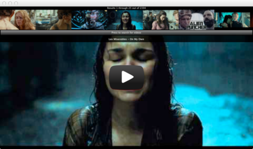
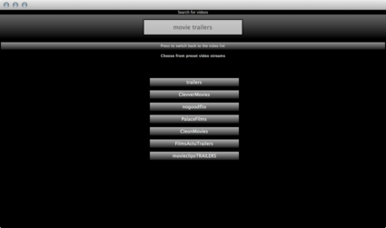

YouTube View Example
Demonstrates how to embed a web view in a Qt Quick application
The YouTube View QML example uses a WebView to play HTML5 video clips from YouTube.

The applicaiton makes use of an XmlListModel to query the YouTube API for HTML5 video clips and lists thumbnails of the clips in a ListView at the top. The WebView loads a local player.html file that embeds a YouTube HTML5 video player using the IFrame player API, which allows to control the YouTube player using JavaScript.
When clicking on a thumbnail, the corresponding clip is loaded in the WebView by passing the video ID as a query string to player.html. When the video is started, the thumbnail list is hidden with an animated fade-out, when the video is stopped the list is showed again. The specific states of the player change the title of the WebView using document.title in JavaScript. The application is acting on these title changes in the onTitleChanged slot of the WebView item and thus switches between specific states. By default the application loads a list of movie trailers.
When clicking on the button below the thumbnail list, the application switches to search mode, which allows to search for videos using keywords. Additionally it is also possible to choose from a number of preset movie trailer streams.

This example uses the QtWebKit QML API that utilizes the WebKit2 split-process architecture.
Files: